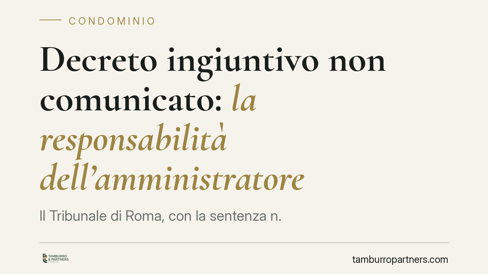

Decreto ingiuntivo non comunicato: la responsabilità dell'amministratore
Il Tribunale di Roma, con la sentenza n. 5083/2026, ha condannato un ex amministratore a risarcire oltre 10.000 euro per aver taciuto all'assemblea la notifica di un decreto ingiuntivo e del successivo precetto. Una pronuncia che ricorda un obbligo spesso sottovalutato: l'informativa immediata sulle azioni giudiziarie che riguardano il condominio.

Il caso deciso dal Tribunale di Roma
Un amministratore riceve la notifica di un decreto ingiuntivo a carico del condominio. Poi arriva il precetto, cioè l'intimazione formale a pagare che precede il pignoramento. In entrambi i casi non informa l'assemblea, che così perde la possibilità di reagire: opporsi al decreto, verificare la fondatezza del credito, saldare prima che maturino interessi e spese esecutive.
Il Tribunale di Roma (sent. n. 5083/2026) ha ritenuto questa omissione fonte di responsabilità e ha condannato l'ex amministratore a risarcire il condominio per oltre 10.000 euro. La cifra corrisponde, in sostanza, al maggior esborso che una tempestiva informazione avrebbe permesso di evitare.
Inquadramento normativo
Il punto di partenza è l'art. 1131, comma 3, cod. civ. La norma stabilisce che l'amministratore, quando la citazione o il provvedimento riguarda materie che esorbitano dalle sue attribuzioni, deve darne senza indugio notizia all'assemblea. Un decreto ingiuntivo che espone il condominio a un'esecuzione forzata rientra pienamente in questa previsione: non è un atto di ordinaria gestione, ma un evento che incide sul patrimonio comune e richiede una decisione collegiale.
Accanto a questa disposizione operano gli artt. 1129 e 1130 cod. civ., che delineano i doveri di diligenza e di rendiconto dell'amministratore, e l'art. 1218 cod. civ., che disciplina la responsabilità contrattuale. Il rapporto tra amministratore e condominio è infatti un mandato: chi non adempie agli obblighi assunti risponde dei danni, salvo provare che l'inadempimento è dipeso da causa a lui non imputabile. Nel caso romano questa prova non è stata fornita.
La qualificazione della responsabilità come contrattuale non è un dettaglio: comporta un termine di prescrizione più lungo (dieci anni) e una ripartizione dell'onere probatorio favorevole al condominio, che deve limitarsi ad allegare l'inadempimento.
Implicazioni pratiche
Per l'amministratore la sentenza segna un confine netto. Ricevere un atto giudiziario non significa poterlo gestire in autonomia o rinviarne la comunicazione a un momento ritenuto più opportuno. L'obbligo di informativa scatta subito e la sua violazione può tradursi in un danno risarcibile.
Il profilo economico è rilevante. Il danno non coincide necessariamente con l'intero importo intimato, ma con il pregiudizio aggiuntivo generato dal silenzio: interessi moratori, spese di precetto, costi dell'esecuzione, eventuale impossibilità di opporsi nei termini. È su questo scarto che si misura il risarcimento.
Per i condòmini, la pronuncia conferma l'esistenza di uno strumento di tutela concreto contro le omissioni gestorie. Ma la responsabilità dell'amministratore non li esonera dal debito verso il creditore: il condominio resta obbligato e recupererà eventualmente dall'amministratore in via di rivalsa.
Per il creditore, infine, nulla cambia sul piano del recupero: l'azione esecutiva prosegue verso il condominio a prescindere dai rapporti interni.
Cosa fare in concreto
- Comunicate subito ogni atto giudiziario. Alla ricezione di un decreto ingiuntivo, di un precetto o di una citazione, l'amministratore convochi l'assemblea o informi per iscritto i condòmini senza attendere.
- Documentate l'informativa. Conservate la prova dell'avvenuta comunicazione (verbale, PEC, raccomandata): in caso di contestazione sarà decisiva per dimostrare la diligenza.
- Verificate i termini di opposizione. Il decreto ingiuntivo si oppone entro quaranta giorni dalla notifica: perdere questo termine per inerzia è uno dei danni più frequentemente contestati.
- Aggiornate il registro di contabilità e la posizione debitoria prima di ogni assemblea, così che i condòmini deliberino con dati completi.
- Chiedete assistenza qualificata in caso di dubbio. Quando l'atto esorbita dall'ordinaria amministrazione, consigliamo di sottoporlo tempestivamente a un legale prima di assumere iniziative.
Contributo informativo a cura di Tamburro & Partners - Avv. Giuseppe Tamburro. Non costituisce parere legale.
Ogni condominio ha una storia a sé.
Se gestisci un'amministrazione e vuoi un confronto su una specifica questione condominiale, scrivi allo studio. Ti rispondiamo entro un giorno lavorativo.